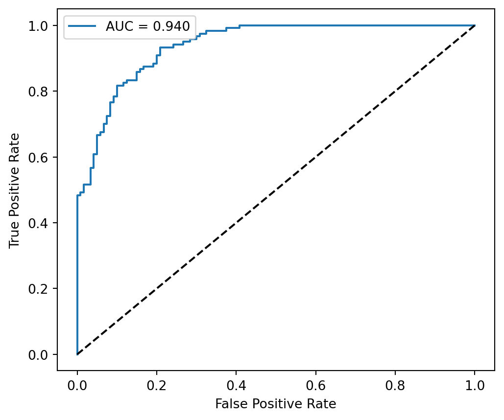
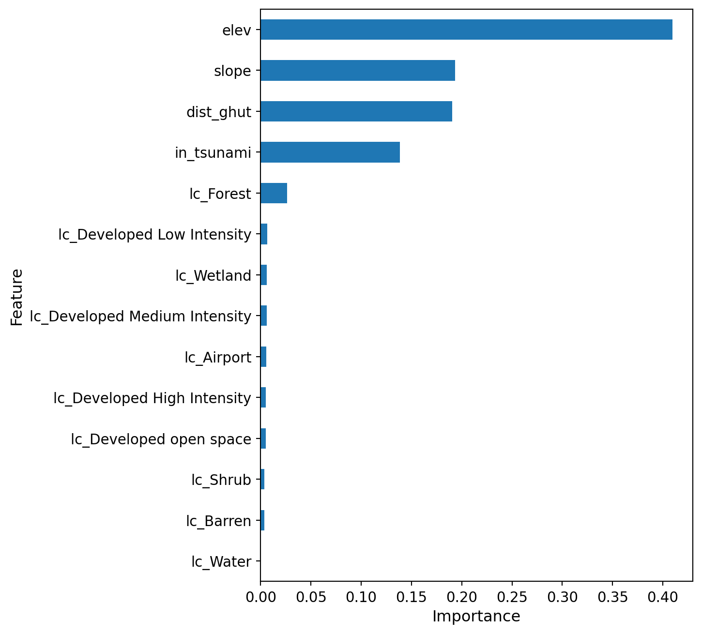

The Random Forest (RF) model was adopted to map flood susceptibility across St. Thomas. The training data, consisting of 14 flood-conditioning features, was standardized through a pipeline and input into an RF classifier, with its performance first assessed using a held-out test set. To improve stability and reduce overfitting, model performance was further evaluated through 5-fold stratified cross-validation using ROC–AUC as the scoring metric. A GridSearchCV procedure was implemented to optimize hyperparameters across a search space including the number of trees (50–150), maximum depth (8–None), and minimum samples required for node splits and leaf nodes. The best-performing configuration—identified through cross-validated AUC—included 100 trees, a maximum depth of 10, a minimum of 5 samples to split a node, and 3 samples per leaf, with class weights balanced to address sample imbalance.
Using this optimized model, the RF classifier achieved strong predictive performance (accuracy = 0.85; AUC = 0.94). Class-level precision, recall, and F1 scores remained consistently high for both flooded and non-flooded samples, ranging from 0.82 to 0.88. The ROC curve demonstrates robust discrimination across false-positive rates, confirming the model’s reliability. Feature importance rankings indicate that elevation is the dominant predictor, followed by slope, distance to ghuts, tsunami exposure, and forest cover, while remaining land-cover classes contribute smaller but meaningful signals.
Code
import matplotlib.pyplot as pltimport matplotlib.patches as mpatchesimport numpy as npfrom pathlib import Pathimport geopandas as gpdy_pred = best_model.predict(X_test)y_proba = best_model.predict_proba(X_test)[:, 1]fpr, tpr, thr = roc_curve(y_test, y_proba)plt.figure(figsize=(6, 5))plt.plot(fpr, tpr, label=f"AUC = {roc_auc_score(y_test, y_proba):.3f}")plt.plot([0, 1], [0, 1], "k--")plt.xlabel("False Positive Rate")plt.ylabel("True Positive Rate")plt.legend()plt.show()

Figure 1: ROC – Flood Susceptibility Model
Code
import matplotlib.pyplot as pltimport matplotlib.patches as mpatchesimport numpy as npfrom pathlib import Pathimport geopandas as gpdrf_model = best_model.named_steps["randomforestclassifier"]importance = pd.DataFrame({"Feature": feature_cols,"Importance": rf_model.feature_importances_}).sort_values("Importance", ascending=False)# Create chartimportance = pd.DataFrame({"Feature": feature_cols,"Importance": rf_model.feature_importances_}).sort_values("Importance", ascending=False)ax = importance.sort_values("Importance", ascending=True).plot.barh( x="Feature", y="Importance", figsize=(6, 8), legend=False# no legend by default)# Increase font sizesax.set_xlabel("Importance", fontsize=12)ax.set_ylabel("Feature", fontsize=12)ax.tick_params(axis="both", labelsize=11)plt.show()

Figure 2: Feature Importance
The Flood Susceptibility
With the model validated, the trained RF classifier was applied to the full study area to generate a spatially continuous flood susceptibility map. The flood susceptibility in St Thomas shows a 100 m × 100 m flood susceptibility index ranging from 0.0 (purple, very low) to 1.0 (bright yellow, very high). Values above ~0.8 are concentrated along the coastal fringe, harbors, and embayed shorelines, indicating the most exposed zones. Mid-range values (~0.4–0.7) extend inland along primary drainage corridors. Interior uplands and ridges are dominated by low indices (<0.3), reflecting reduced ponding potential at higher elevations.